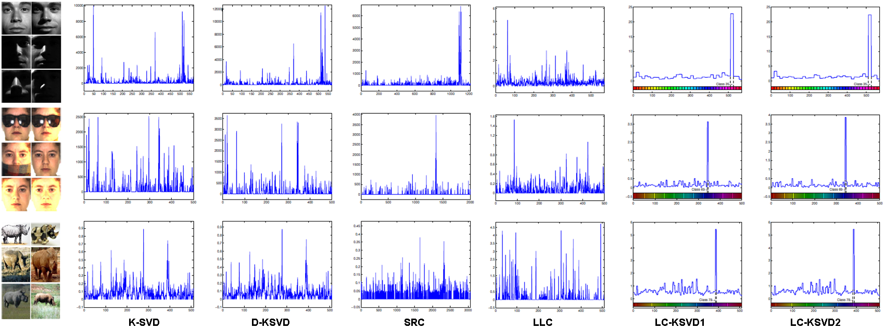
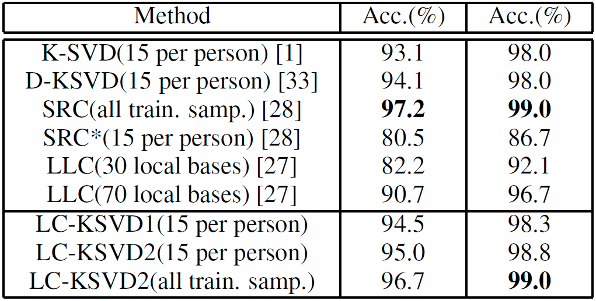
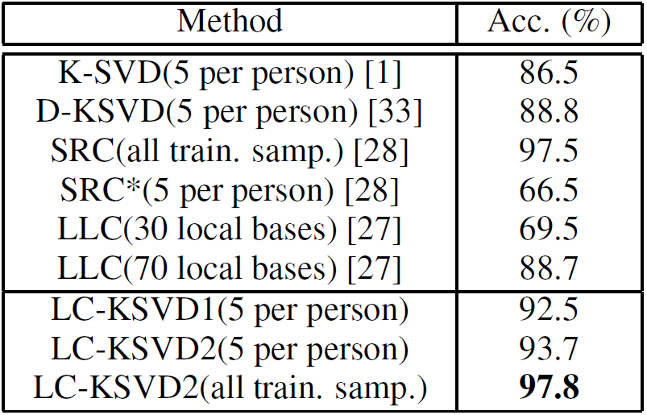
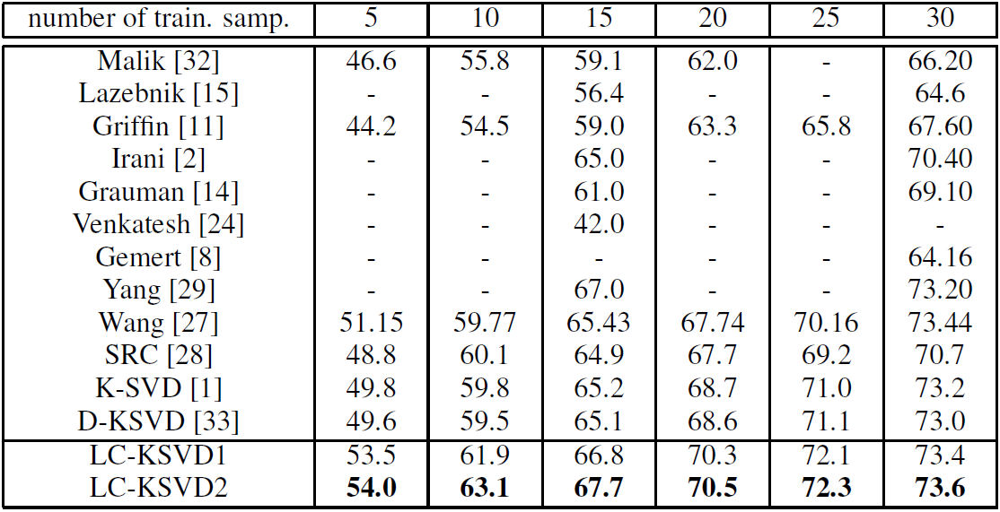
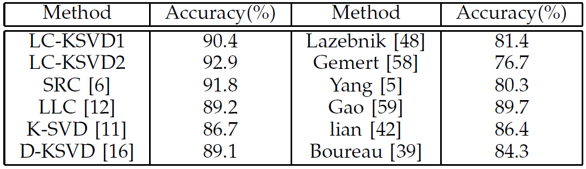

|
Label Consistent K-SVD: Learning A Discriminative Dictionary for Recognition Zhuolin Jiang, Zhe Lin, Larry S. Davis Abstract: A label consistent K-SVD (LC-KSVD) algorithmto learn a discriminative dictionary for sparse coding is presented. In addition to using class labels of training data, we also associate label information with each dictionary item (columns of the dictionary matrix) to enforce discriminability in sparse codes during the dictionary learning process. More specifically, we introduce a new label consistency constraint called ‘discriminative sparse-code error’ and combine it with the reconstruction error and the classification error to form a unified objective function. The optimal solution is efficiently obtained using the K-SVD algorithm. Our algorithm learns a single over-complete dictionary and an optimal linear classifier jointly. The incremental dictionary learning algorithm is presented for the situation of limited memory resources. It yields dictionaries so that feature points with the same class labels have similar sparse codes. Experimental results demonstrate that our algorithm outperforms many recently proposed sparse coding techniques for face, action, scene and object category recognition under the same learning conditions. |
Examples of Sparse Codes: Each waveform (below) indicates the sum of absolute sparse codes for different testing samples from the same class.  |
Experimental Results: The feature descriptors used in the Extended YaleB database and AR Face database are random faces. The dimension of a random-face feature in Extended YaleB is 504 while the dimension in AR face is 540. For the Caltech101 dataset, we first extract sift descriptors from 16 x 16 patches which are densely sampled using a grid with a step size of 6 pixels; then we extract the spatial pyramid feature based on the extracted sift features with three grids of size 1 x 1, 2 x 2 and 4 x 4. To train the codebook for spatial pyramid, we use the standard k-means clustering with k = 1024. Finally, the spatial pyramid feature is reduced to 3000 dimensions by PCA. (a) Extended YaleB database  (b) AR database  (c) Caltech101 dataset  (d) Fifteen scene category dataset  |
Downloads: *All materials provided here are only available for noncommercial research use.
If you happen to use the source code or other files provided by this webpage, please cite our papers:
If you have any questions about this source code, please look at frequent questions first, you might find the answer. Otherwise, please contact me via (zhuolinumd@gmail.com) |
Latest update 12-23-2024 |